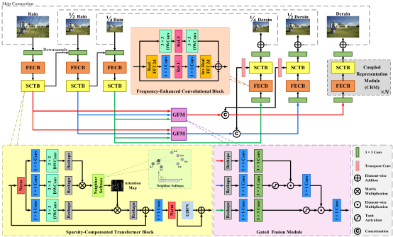
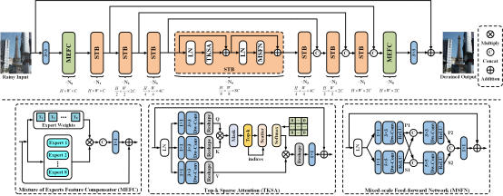

I am currently a 2nd-year Ph.D. candidate at Intelligent Media Analysis Group, School of Computer Science and Engineering, Nanjing University of Science and Technology, supervised by Prof. Jinshan Pan. Before that, I received my M.S. degree under the supervision of Prof. Yufeng Li and Prof. Yufeng Huang from College of Electronic Information Engineering, Shenyang Aerospace University, in 2022, and the B.S. degree from School of Information Science and Engineering, Dalian Polytechnic University, in 2019. I served as the founder and CEO of Dalian Quanli Network Technology Co., Ltd. from 2017 to 2021. My research interests include computer vision and deep learning, mainly focusing on image deraining and related low-level vision problems.
 |
Bidirectional Multi-Scale Implicit Neural Representations for Image Deraining
Xiang Chen, Jinshan Pan*, Jiangxin Dong
IEEE Conference on Computer Vision and Pattern Recognition (CVPR), 2024.
[Paper][Code]
|
|  |
Rethinking Multi-Scale Representations in Deep Deraining Transformer
Hongming Chen, Xiang Chen*, Jiyang Lu, Yufeng Li*
AAAI Conference on Artificial Intelligence (AAAI), 2024.
[Paper][Code]
|
 |
Learning A Spiking Neural Network for Efficient Image Deraining
Tianyu Song, Guiyue Jin, Pengpeng Li, Kui Jiang, Xiang Chen, Jiyu Jin*
International Joint Conference on Artificial Intelligence (IJCAI), 2024.
[Paper][Code]
|
 |
Collaborative Feedback Discriminative Propagation for Video Super-Resolution
Hao Li, Xiang Chen, Jiangxin Dong, Jinhui Tang, Jinshan Pan*
arXiv preprint arXiv:2404.04745 (arXiv), 2024.
[Paper]
[Code]
|
|  |
Learning A Sparse Transformer Network for Effective Image Deraining
Xiang Chen, Hao Li, Mingqiang Li, Jinshan Pan*
IEEE Conference on Computer Vision and Pattern Recognition (CVPR), 2023.
[Paper]
[Code]
|
 |
Hybrid CNN-Transformer Feature Fusion for Single Image Deraining
Xiang Chen, Jinshan Pan*, Jiyang Lu, Zhentao Fan, Hao Li
AAAI Conference on Artificial Intelligence (AAAI), 2023.
[Paper]
[Code]
|
 |
Towards Unified Deep Image Deraining: A Survey and A New Benchmark
Xiang Chen, Jinshan Pan*, Jiangxin Dong, Jinhui Tang
arXiv preprint arXiv:2310.03535 (arXiv), 2023.
[Paper]
[Code]
|
 |
Unpaired Deep Image Deraining Using Dual Contrastive Learning
Xiang Chen, Jinshan Pan, Kui Jiang, Yufeng Li*, Yufeng Huang, Caihua Kong, Longgang Dai, Zhentao Fan
IEEE Conference on Computer Vision and Pattern Recognition (CVPR), 2022.
[Paper]
[Code]
|
Selected Honors
2022.09-Present (Nanjing University of Science and Technology):
2019.09-2022.06 (Shenyang Aerospace University):
Talks
- 2023.11.28 Talk at College of Electronic Information Engineering, Shenyang Aerospace University [高质量期刊论文、学位论文写作经验分享]
- 2023.11.19 Talk at Traffic Video Special Committee of China Society of Image and Graphics (CSIG) [CSIG交通视频专委会“学术新星”]
- 2023.03.31 Talk at Student Forum of China Society of Image and Graphics (CSIG) [面向恶劣环境下的视觉增强方法]
Services
Journal Reviewer:
- IEEE Transactions on Pattern Analysis and Machine Intelligence (TPAMI)
- IEEE Transactions on Neural Networks and Learning Systems (TNNLS)
- IEEE Transactions on Circuits and Systems for Video Technology (TCSVT)
- IEEE Transactions on Multimedia (TMM)
- IEEE Transactions on Geoscience and Remote Sensing (TGRS)
- Pattern Recognition (PR)
- Science China Information Sciences (SCIS)
- International Journal of Digital Earth (IJDE)
- Computer Vision and Image Understanding (CVIU)
- IEEE Geoscience and Remote Sensing Letters (GRSL)
- The Visual Computer (TVCJ)
- Optics Communication (Opt Commun)
- Signal, Image and Video Processing (SIVP)
- Journal of Circuits, Systems, and Computers (JCSC)
Conference Reviewer:
- IEEE Conference on Computer Vision and Pattern Recognition (CVPR 2022-2024)
- IEEE International Conference on Computer Vision (ICCV 2023)
- European Conference on Computer Vision (ECCV 2022, 2024)
- International Conference on Machine Learning (ICML 2024)
- Annual Conference on Neural Information Processing Systems (NeurIPS 2023)
- International Conference on Learning Representations (ICLR 2024)
- AAAI Conference on Artificial Intelligence (AAAI 2023-2024)
- International Joint Conference on Artificial Intelligence (IJCAI 2023-2024)
- ACM International Conference on Multimedia (ACM MM 2022-2024)
- Medical Image Computing and Computer-Assisted Intervention (MICCAI 2023-2024)
- Asian Conference on Computer Vision (ACCV 2022, 2024)
- IEEE Winter Conference on Applications of Computer Vision (WACV 2023-2024)
- European Conference on Artifical Intelligence (ECAI 2024)


 If you are interested in image deraining, please feel free to contact me. (any question/suggestion/collaboration)
If you are interested in image deraining, please feel free to contact me. (any question/suggestion/collaboration)